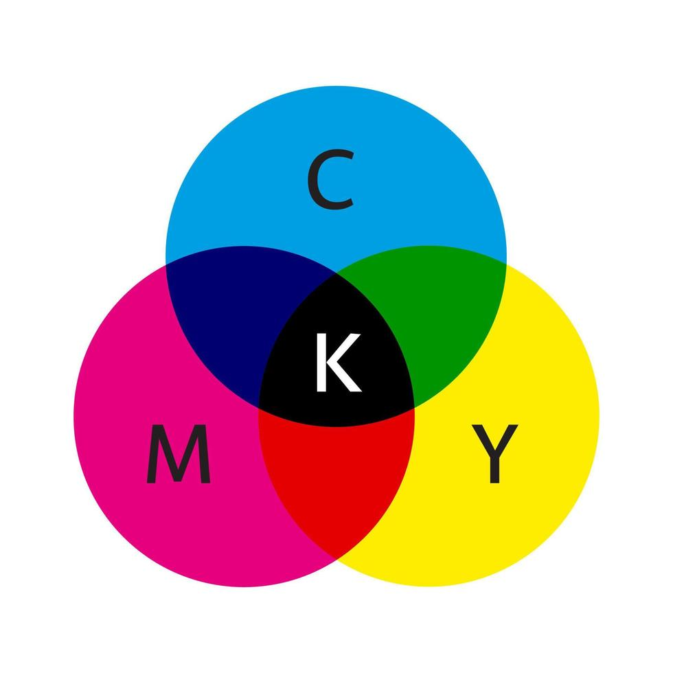

O Modelo RGB (Vermelho, Verde, Azul)
O modelo RGB é utilizado principalmente em dispositivos que emitem luz, como telas de computadores, TVs, e câmeras digitais. Ele funciona combinando três cores primárias de luz: vermelho, verde e azul.
Quando essas cores são misturadas em diferentes intensidades, elas podem criar uma ampla variedade de cores. A intensidade de cada cor é medida de 0 a 255, onde:
- 0 representa a ausência da cor;
- 255 representa a intensidade máxima da cor.
Funcionamento do Pixel no Modelo RGB
Uma tela RGB é composta por milhares ou milhões de pixels, que são pequenos pontos de luz. Cada pixel, por sua vez, é formado por três subpixels: um vermelho, um verde e um azul. A combinação dessas três cores nos subpixels cria a cor final que vemos em cada pixel.
O controle da intensidade de cada subpixel, por meio da variação nos valores de 0 a 255, permite que diferentes cores sejam exibidas. Por exemplo:
- Se todos os subpixels estiverem em 0, o pixel será preto;
- Se todos os subpixels estiverem em 255, o pixel será branco;
- Com valores intermediários, diferentes tons e variações podem ser obtidos.
O Modelo CMYK (Ciano, Magenta, Amarelo e Preto)
O modelo CMYK é usado principalmente na impressão em cores. Ao contrário do RGB, que é aditivo (a cor é formada pela combinação de luz), o CMYK é um modelo subtrativo, ou seja, as cores são criadas pela subtração de luz através da combinação de quatro cores: ciano (C), magenta (M), amarelo (Y) e preto (K).
Quando essas cores de tinta são misturadas, elas absorvem (ou "subtraem") parte da luz que recai sobre o papel, criando a cor visível. O preto é adicionado para aumentar a profundidade e intensidade das cores.
O modelo CMYK é comum em impressoras, onde o papel é colorido pela aplicação dessas tintas. A combinação dessas cores pode gerar uma variedade de cores que é diferente da do modelo RGB, pois o processo de subtração de luz resulta em uma paleta diferente de cores.
